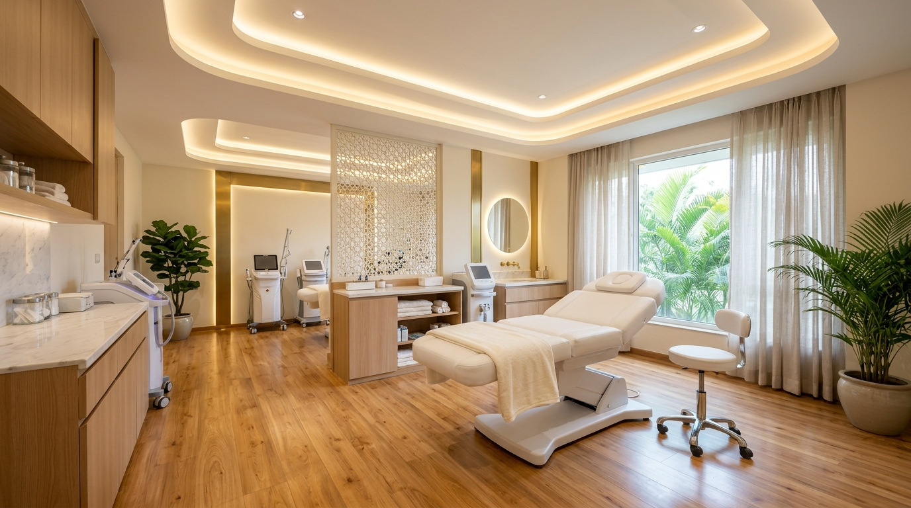
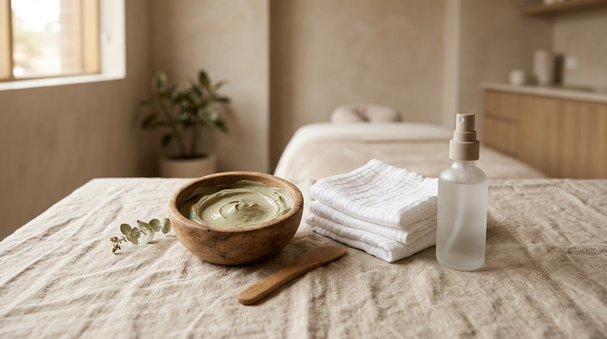
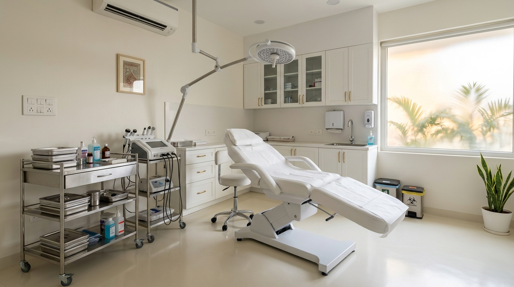
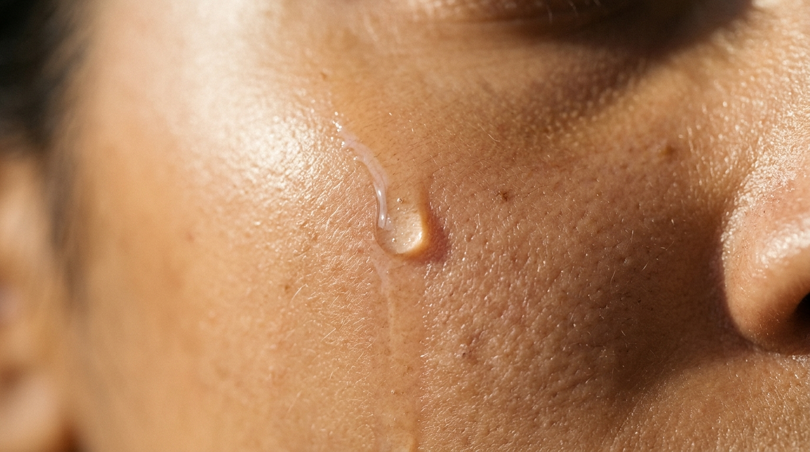

Understanding Aesthetic Treatment Categories
Modern skincare blends clinical science with aesthetic artistry. Choosing the right modality requires an understanding of what each procedure entails.
Every skin type reacts differently to active exfoliation, micro-stimulation, or hydration infusions. Rather than adhering to pre-set package deals, we emphasize tailored assessment. Below, you will find objective descriptions of core treatment categories offered for aesthetic refinement.

In-Depth Treatment Categories
Review the purpose, reasons for enquiry, consultation considerations, and general aftercare for each treatment category.
1. Skin Consultation
What it involves: A comprehensive diagnostic dialogue evaluating skin barrier strength, hydration parameters, pore congestion, pigmentation patterns, and past product reactions.
Common reasons people enquire: Persistent breakouts, unexpected dullness, shifting skin sensitivity, or confusion over active ingredients (retinoids, AHA/BHAs, Vitamin C).
Consultation considerations: Disclose any current prescription topicals, oral medications, allergies, or recent sun exposure.
General aftercare: Follow the gentle customized routine suggested by your professional.
Book Consultation
2. Professional Facial Treatments
What it involves: Clinical multi-phase deep cleansing, mild enzymatic exfoliation, targeted mask application, and barrier-soothing serums tailored to skin sensitivity.
Common reasons people enquire: Preparation for special events, seasonal skin dryness, environmental pollution buildup, or ongoing skin maintenance.
Consultation considerations: Identifies active pustular inflammation, eczema flares, or severe rosacea that may require specialized non-abrasive protocols.
General aftercare: Avoid heavy makeup for 12 hours; maintain good hydration and apply SPF 30+ regularly.
View Facial Treatments
3. Chemical Peels
What it involves: Controlled application of mild to medium strength hydroxy acids (glycolic, lactic, salicylic, or mandelic) to dissolve cellular bonds in dull outer layers.
Common reasons people enquire: Superficial pigmentation, mild post-acne blemishes, uneven complexion, and clogged pores.
Consultation considerations: Pre-treatment skin priming may be needed for darker Indian skin types (Fitzpatrick IV–VI) to prevent post-inflammatory hyperpigmentation (PIH).
General aftercare: Strict sun avoidance, gentle moisturising, no peeling or scrubbing flakes; daily broad-spectrum sun protection is essential.
Enquire About Peels
4. Microneedling (Collagen Induction)
What it involves: Automated micro-fine needle penetration creating controlled micro-injuries that trigger natural collagen and elastin synthesis.
Common reasons people enquire: Depressed acne scars, enlarged pores, superficial fine lines, and irregular skin texture.
Consultation considerations: Contraindicated during active cystic acne flare-ups, bleeding disorders, or active cold sores.
General aftercare: Mild pinkness for 24–48 hours; avoid strenuous exercise, saunas, and active acids for 3–5 days.
Acne Scar Care Details
5. Laser-Based Skin Services
What it involves: Targeted light energy modalities (such as Q-switched laser toning) focused on selective photothermolysis to break down melanin particles or stimulate deep dermal warmth.
Common reasons people enquire: Stubborn pigmentation, tanning, tattoo lightening consultation, and overall tone harmonization.
Consultation considerations: Comprehensive test patching and thorough evaluation of recent sun exposure are critical to ensure safety.
General aftercare: Soothing barrier creams, strict SPF 50 application, avoiding excessive heat or friction.
Pigmentation & Tone Details
6. Aesthetic Skin Rejuvenation
What it involves: Non-surgical restorative treatments including low-level LED light therapy, radiofrequency heating, and antioxidant serum infusions.
Common reasons people enquire: Early loss of firmness, dullness from stress, fine crow's feet, and tired-looking skin.
Consultation considerations: Discussion of lifestyle habits, sleep patterns, hydration, and realistic expectations regarding non-surgical limits.
General aftercare: Zero downtime; immediate return to daily activities with sustained sun protection.
Anti-Aging Solutions
7. Hydration-Focused Treatments
What it involves: Specialized multi-stage water-based peeling and high-pressure antioxidant serum infusions (Hydrafacial-style technologies).
Common reasons people enquire: Dehydrated feeling, parched skin from air conditioning, blackheads around the nose, and lack of glow.
Consultation considerations: Checks for active skin tears or sensitivity to specific serum components.
General aftercare: Skin feels plump and dewy; maintain results with recommended humectant moisturizers.
Explore Hydration Options
8. Skin Texture Care
What it involves: Gentle microdermabrasion, diamond-tip exfoliation, and targeted refining masks to soften rough epidermis and smooth surface texture.
Common reasons people enquire: Flaky patches, uneven makeup application, congested pores, and granular skin feel.
Consultation considerations: Ensuring skin barrier is not inflamed or compromised before any physical exfoliation.
General aftercare: Use barrier repair ceramide creams; avoid coarse facial scrubs or loofahs at home.
Book Texture Consultation